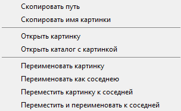

Панель просмотра
Панель просмотра расположена в левой части главного окна для режима просмотра результатов в виде Таблицы вертикальных пар:

или в верхней части главного окна для режима просмотра результатов в виде Таблицы горизонтальных пар:

Переключение режима просмотра результатов осуществляется при помощи пункта Вид - Режим просмотра результатов главного меню. Функциональность панели просмотра от режима просмотра результатов не зависит и предназначена для отображения текущего результата из таблицы результатов. С помощью нее можно подробно рассмотреть дублирующие либо дефектные изображения, а также провести над ними основные операции.
Отображение пары дубликатов
Пара дублирующих изображений отображается на панели в зависимости от режима простра в виде столбца или строки. Взаимное расположение картинок соответствует их расположению в списке результатов. Рядом с ними размещаются кнопки управления. Далее располагается список этих кнопок и их названий:
или
- Удалить обе картинки.
или
- Заместить вторую картинку первой.
или
- Удалить первую картинку.
- Перейти к предыдущему результату.
- Перейти к следующему результату.
или
- Удалить вторую картинку.
или
- Заместить первую картинку второй.
- Пометить текущий результат как ошибочный.
Смысл большинства действий, которые осуществляются данными кнопками, хорошо понятен из их названий. Остановимся только на последней: данная кнопка позволяет пометить текущий результат как ложный, что исключит его появление при повторных поисках. Дополнительно отметим, что все перечисленные выше действия (кроме перемещения по результатам), могут быть отменены.
Отображение дефектной картинки
Дефектная картинка отображается в зависимости от режима просмотра результатов вверху или слева на панели просмотра (возможна ситуация, когда программа не может открыть ее, тогда сверху будет пустое изображение). Ниже ее располагаются кнопки управления:
или
- Удалить картинку.
- Перейти к следующему результату.
Дополнительные возможности
Под каждой картинкой располагается панель с краткой информацией о ней. Она включает в себя занимаемое место на диске, размеры изображения (ширина и высота), блочность картинки, размытость картинки, ее тип, EXIF информацию, если она была найдена, и путь к картинке. Отметим, что если картинки дублирующей пары имеют разный тип, разную EXIF информацию, то эта информация выделяется красным цветом. Также красным цветом выделяются информация об изображении имеющим меньшие размеры, занимающей меньше места на диске, имеющем большую блочность, большую размытость. EXIF информация выводится в сплывающей подсказке к надписи 'EXIF' по следующим полям: описание, изготовитель камеры, модель камеры, программное обеспечение, дата/время, автор, комментарий. При двойном щелчке по пути к картинке можно переименовать или переместить данное изображение.
При двойном щелчке мышью по картинке она откроется при помощи внешней программы просмотра изображений.
В некоторых случаях, когда программа может однозначно определить лучшее изображение из пары, появляется рекомендация пользователя, и соответствующая кнопка помечается розовым цветом.
Все кнопки на данной панели дублированы горячими клавишами. Текущие горячие клавиши отображаются в описании кнопок во всплывающих подсказках, если подвести курсор мыши к любой из кнопок на панели.
Если кликнуть правой кнопкой мыши по картинке, то откроется контекстное меню со следующими пунктами:
Скопировать путь к данной картинке.
Скопировать имя картинки.
Открыть картинку при помощи внешней программы просмотра изображений.
Открыть каталог, в котором хранится текущая картинка.
Переименовать или переместить изображение.
Переименовать картинку с именем как у соседней картинки. Если файл с таким именем уже существует, то переименовывается с похожим именем. (В имени ищутся цифры с конца, если находятся то цифра увеличивается на единицу, если не находятся, или файл с такой цифрой уже есть, то добавляется символ '_2').
Переместить в каталог к соседней картинке. Данная операция доступна, если картинки находятся в разных каталогах и имеют разные названия.
Переместить к соседней картинке и переименовать как соседнею. Перемещает в каталог с соседней картинкой и переименовывает ее с похожим именем. Данная операция доступна, если картинки находятся в разных каталогах.
Отметим, что операции по перемещению или переименованию картинок являются отменяемыми.